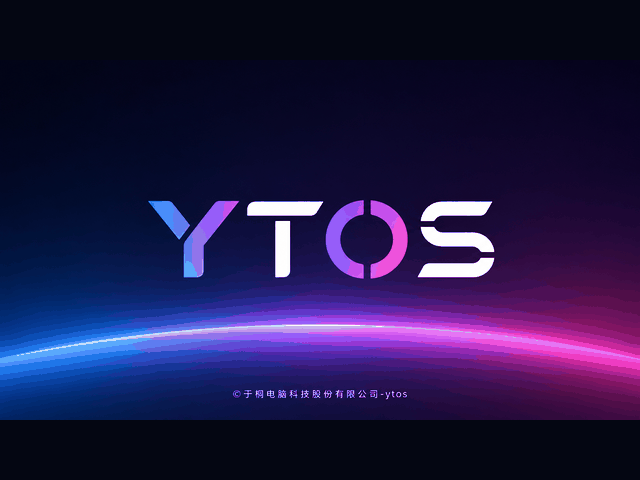
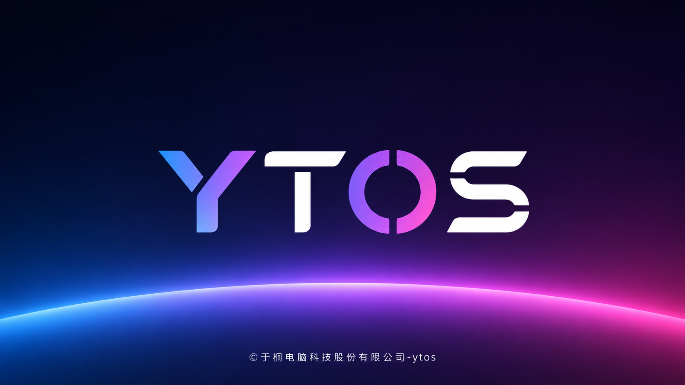
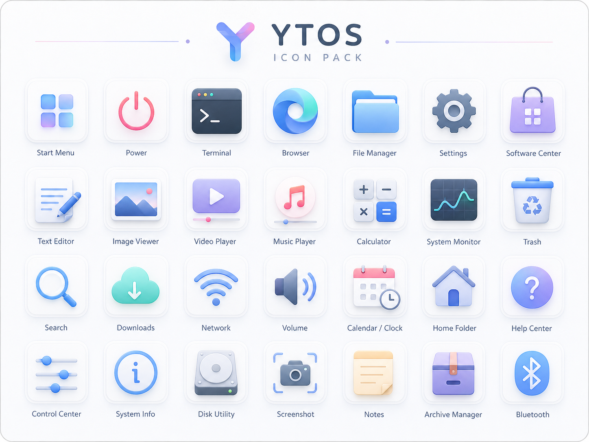

YTOS-开发者预览版
一个更轻、更柔和的桌面系统-YTOS。
YTOS 以 Linux live 系统为基础，面向真实 x86 电脑启动测试，保留熟悉的文件管理、 软件安装、网络连接和设置中心体验，同时加入 YTOS 自己的视觉语言。
YTOS Desktop Preview
Developer Preview
Y
启动视觉

1.7GB
当前通用镜像级别
轻量桌面
适合 Live USB 启动和真机测试
中文优先
字体、启动台、设置入口统一适配
应用安装
双击 deb，自动刷新应用入口
开发者预览
持续打磨 UI、兼容性和安装体验
Visual System
延续系统本身的柔光、圆角和玻璃层次。
宣传页使用 YTOS 默认壁纸的浅色渐变作为视觉基底，再叠加启动图中的蓝紫光晕， 保持和系统界面一致的科技感与轻盈感。
启动到桌面
从启动图到桌面壁纸保持连续的光感，减少割裂感，让系统第一印象更完整。
启动台体验
保留图标式启动台，强调圆角图标、清晰标签和轻量飞入动效。
设置中心
以分类为入口，覆盖显示、声音、网络、外观、应用、电源和关于系统等基础设置。
Desktop Experience
把开发者预览版做得更像可日常试用的系统。
直接写盘启动
面向 x86_64 电脑的通用镜像，保留 BIOS 与 UEFI 启动路径。
文件和图片浏览
通过 Linux 桌面组件提供文件管理、图片查看、NTFS 等常见分区访问。
软件安装更顺
双击 deb 进入 YTOS 安装器，安装后刷新启动台入口，常用国产软件做兼容处理。
显示设置
分辨率与亮度
1920×1080
已应用
System Gallery
把系统界面放进一个连续的叙事里。

启动界面
深色宇宙光晕与 YTOS 标志，适合作为系统启动第一屏。
默认壁纸
浅色渐变曲线，降低视觉压力，让图标和窗口更清晰。

图标语言
圆角、柔光、拟物层次，适合启动台和桌面入口。
Release Channel
YTOS-开发者预览版
当前阶段用于真机启动、图形界面、软件安装和中文体验验证。它不是最终正式版， 但已经开始向完整桌面发行版的方向收敛。（开发者预览版功能有待完善 效果以实际为准）